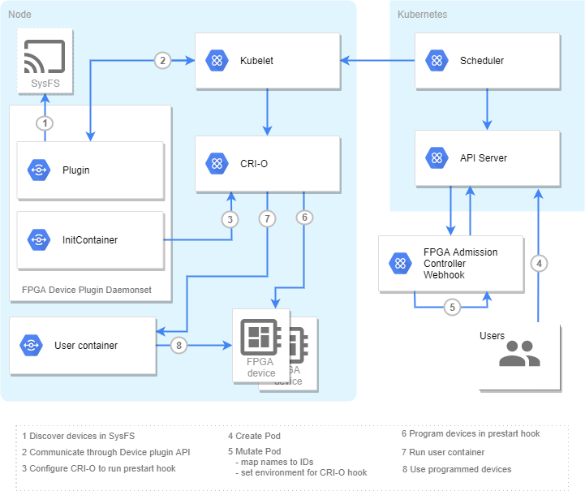
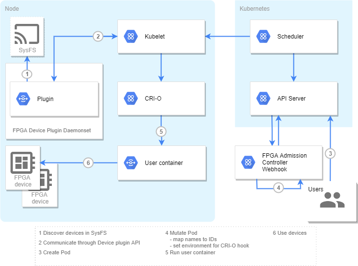

Intel FPGA device plugin for Kubernetes
Table of Contents
Introduction
This FPGA device plugin is part of a collection of Kubernetes components found within this repository that enable integration of Intel FPGA hardware into Kubernetes.
The following hardware platforms are supported:
Intel Arria 10
Intel Stratix 10
The components support the Open Programmable Acceleration Engine (OPAE) interface.
The components together implement the following features:
discovery of pre-programmed accelerator functions
discovery of programmable regions
orchestration of FPGA programming
access control for FPGA hardware
Component overview
The following components are part of this repository, and work together to support Intel FPGAs under Kubernetes:
FPGA device plugin (this component)
A Kubernetes device plugin that discovers available FPGA resources on a node and advertises them to the Kubernetes control plane via the node kubelet.
FPGA admission controller webhook
A Kubernetes admission controller webhook which can be used to dynamically convert logical resource names in pod specifications into actual FPGA resource names, as advertised by the device plugin.
The webhook can also set environment variables to instruct the CRI-O prestart hook to program the FPGA before launching the container.
NOTE: Installation of the FPGA admission controller webhook can be skipped if the FPGA device plugin is operated with the Intel Device Plugins Operator since it integrates the controller’s functionality. However, the mappings still must be deployed.”
-
A CRI-O prestart hook that, upon instruction from the FPGA admission controller, allocates and programs the FPGA before the container is launched.
The repository also contains an FPGA helper tool that may be useful during development, initial deployment and debugging.
FPGA modes
The FPGA plugin set can run in one of two modes:
regionmode, where the plugins locate and advertise regions of the FPGA, and facilitate programing of those regions with the requested bistreams.afmode, where the FPGA bitstreams are already loaded onto the FPGA, and the plugins discover and advertises the existing Accelerator Functions (AF).
The example YAML deployments described in this document only currently support
af mode. To utilise region mode, either modify the existing YAML appropriately,
or deploy ‘by hand’.
Overview diagrams of af and region modes are below:
region mode:

af mode:

Installation
The below sections cover how to obtain, build and install this component.
Components can generally be installed either using DaemonSets or running them ‘by hand’ on each node.
Pre-built images
Pre-built images of the components are available on the Docker hub.
These images are automatically built and uploaded to the hub from the latest main branch of
this repository.
Release tagged images of the components are also available on the Docker hub, tagged with their
release version numbers (of the form x.y.z, matching the branch/tag release number in this repo).
The deployment YAML files supplied with these components in this repository use the images with the
devel tag by default. If you do not build your own local images, then your Kubernetes cluster may
pull down the devel images from the Docker hub by default.
To use the release tagged versions of the images, edit the YAML deployment files appropriately.
The following images are available on the Docker hub:
Dependencies
All components have the same basic dependencies as the generic plugin framework dependencies
To obtain a fully operational FPGA enabled cluster, you must install all three major components:
FPGA device plugin (this component)
The CRI-O hook is only required if region mode is being used, but is installed by default by the
FPGA plugin DaemonSet YAML, and is benign
in af mode.
If using the af mode, and therefore not using the
CRI-O prestart hook, runtimes other than CRI-O can be used (that is, the CRI-O hook presently
only works with the CRI-O runtime).
The FPGA device plugin requires a Linux Kernel FPGA driver to be installed and enabled to operate. The plugin supports the use of either of following two drivers, and auto detects which is present and thus to use:
Install this component (FPGA device plugin) first, and then follow the links and instructions to install the other components.
Getting the source code
To obtain the YAML files used for deployment, or to obtain the source tree if you intend to do a hand-deployment or build your own image, you will require access to the source code:
$ export INTEL_DEVICE_PLUGINS_SRC=/path/to/intel-device-plugins-for-kubernetes
$ git clone https://github.com/intel/intel-device-plugins-for-kubernetes ${INTEL_DEVICE_PLUGINS_SRC}
Deploying as a DaemonSet
The FPGA webhook deployment depends on having cert-manager installed. See its installation instructions here.
$ kubectl get pods -n cert-manager
NAME READY STATUS RESTARTS AGE
cert-manager-7747db9d88-bd2nl 1/1 Running 0 1m
cert-manager-cainjector-87c85c6ff-59sb5 1/1 Running 0 1m
cert-manager-webhook-64dc9fff44-29cfc 1/1 Running 0 1m
Depending on the FPGA mode, run either
$ kubectl apply -k https://github.com/intel/intel-device-plugins-for-kubernetes/deployments/fpga_plugin/overlays/af
namespace/intelfpgaplugin-system created
customresourcedefinition.apiextensions.k8s.io/acceleratorfunctions.fpga.intel.com created
customresourcedefinition.apiextensions.k8s.io/fpgaregions.fpga.intel.com created
mutatingwebhookconfiguration.admissionregistration.k8s.io/intelfpgaplugin-mutating-webhook-configuration created
clusterrole.rbac.authorization.k8s.io/intelfpgaplugin-manager-role created
clusterrole.rbac.authorization.k8s.io/intelfpgaplugin-node-getter created
clusterrolebinding.rbac.authorization.k8s.io/intelfpgaplugin-get-nodes created
clusterrolebinding.rbac.authorization.k8s.io/intelfpgaplugin-manager-rolebinding created
service/intelfpgaplugin-webhook-service created
deployment.apps/intelfpgaplugin-webhook created
daemonset.apps/intelfpgaplugin-fpgadeviceplugin created
certificate.cert-manager.io/intelfpgaplugin-serving-cert created
issuer.cert-manager.io/intelfpgaplugin-selfsigned-issuer created
or
$ kubectl apply -k https://github.com/intel/intel-device-plugins-for-kubernetes/deployments/fpga_plugin/overlays/region
namespace/intelfpgaplugin-system created
customresourcedefinition.apiextensions.k8s.io/acceleratorfunctions.fpga.intel.com created
customresourcedefinition.apiextensions.k8s.io/fpgaregions.fpga.intel.com created
mutatingwebhookconfiguration.admissionregistration.k8s.io/intelfpgaplugin-mutating-webhook-configuration created
clusterrole.rbac.authorization.k8s.io/intelfpgaplugin-manager-role created
clusterrole.rbac.authorization.k8s.io/intelfpgaplugin-node-getter created
clusterrolebinding.rbac.authorization.k8s.io/intelfpgaplugin-get-nodes created
clusterrolebinding.rbac.authorization.k8s.io/intelfpgaplugin-manager-rolebinding created
service/intelfpgaplugin-webhook-service created
deployment.apps/intelfpgaplugin-webhook created
daemonset.apps/intelfpgaplugin-fpgadeviceplugin created
certificate.cert-manager.io/intelfpgaplugin-serving-cert created
issuer.cert-manager.io/intelfpgaplugin-selfsigned-issuer created
The command should result in two pods running:
$ kubectl get pods -n intelfpgaplugin-system
NAME READY STATUS RESTARTS AGE
intelfpgaplugin-fpgadeviceplugin-skcw5 1/1 Running 0 57s
intelfpgaplugin-webhook-7d6bcb8b57-k52b9 1/1 Running 0 57s
If you intend to deploy your own image, you will need to reference the image build section first.
If you do not want to deploy the devel or release tagged image, you will need to create your
own kustomization overlay referencing your required image.
If you need the FPGA plugin on some nodes to operate in a different mode then add this annotation to the nodes:
$ kubectl annotate node <node_name> 'fpga.intel.com/device-plugin-mode=region'
or
$ kubectl annotate node <node_name> 'fpga.intel.com/device-plugin-mode=af'
And restart the pods on the nodes.
Note: The FPGA plugin DaemonSet YAML also deploys the FPGA CRI-O hook
initcontainerimage, but it will be benign (un-used) when running the FPGA plugin inafmode.
Verify plugin registration
Verify the FPGA plugin has been deployed on the nodes. The below shows the output
you can expect in region mode, but similar output should be expected for af
mode:
$ kubectl describe nodes | grep fpga.intel.com
fpga.intel.com/region-ce48969398f05f33946d560708be108a: 1
fpga.intel.com/region-ce48969398f05f33946d560708be108a: 1
Building the plugin image
If you need to build your own image from sources, and are not using the images available on the Docker Hub, follow the below details.
Note: The FPGA plugin DaemonSet YAML also deploys the FPGA CRI-O hook
initcontainerimage as well. You may also wish to build that image locally before deploying the FPGA plugin to avoid deploying the Docker hub default image.
The following will use docker to build a local container image called
intel/intel-fpga-plugin with the tag devel.
The image build tool can be changed from the default docker by setting the BUILDER argument
to the Makefile.
$ cd ${INTEL_DEVICE_PLUGINS_SRC}
$ make intel-fpga-plugin
...
Successfully tagged intel/intel-fpga-plugin:devel
This image launches fpga_plugin in af mode by default.
To use your own container image, create you own kustomization overlay patching
deployments/fpga_plugin/base/intel-fpga-plugin-daemonset.yaml
file.
Deploy by hand
For development purposes, it is sometimes convenient to deploy the plugin ‘by hand’ on a node. In this case, you do not need to build the complete container image, and can build just the plugin.
Note: The FPGA plugin has a number of other associated items that may also need to be configured or installed. It is recommended you reference the actions of the DaemonSet YAML deployment for more details.
Build FPGA device plugin
When deploying by hand, you only need to build the plugin itself, and not the whole container image:
$ cd ${INTEL_DEVICE_PLUGINS_SRC}
$ make fpga_plugin
Run FPGA device plugin in af mode
$ export KUBE_CONF=/var/run/kubernetes/admin.kubeconfig # path to kubeconfig with admin's credentials
$ export NODE_NAME="<node name>" # if the node's name was overridden and differs from hostname
$ sudo -E ${INTEL_DEVICE_PLUGINS_SRC}/cmd/fpga_plugin/fpga_plugin -mode af -kubeconfig $KUBE_CONF
FPGA device plugin started in af mode
device-plugin start server at: /var/lib/kubelet/device-plugins/fpga.intel.com-af-f7df405cbd7acf7222f144b0b93acd18.sock
device-plugin registered
Note: It is also possible to run the FPGA device plugin using a non-root user. To do this, the nodes’ DAC rules must be configured to device plugin socket creation and kubelet registration. Furthermore, the deployments
securityContextmust be configured with appropriaterunAsUser/runAsGroup.
Run FPGA device plugin in region mode
$ export KUBE_CONF=/var/run/kubernetes/admin.kubeconfig # path to kubeconfig with admin's credentials
$ export NODE_NAME="<node name>" # if the node's name was overridden and differs from hostname
$ sudo -E ${INTEL_DEVICE_PLUGINS_SRC}/cmd/fpga_plugin/fpga_plugin -mode region -kubeconfig $KUBE_CONF
FPGA device plugin started in region mode
device-plugin start server at: /var/lib/kubelet/device-plugins/fpga.intel.com-region-ce48969398f05f33946d560708be108a.sock
device-plugin registered